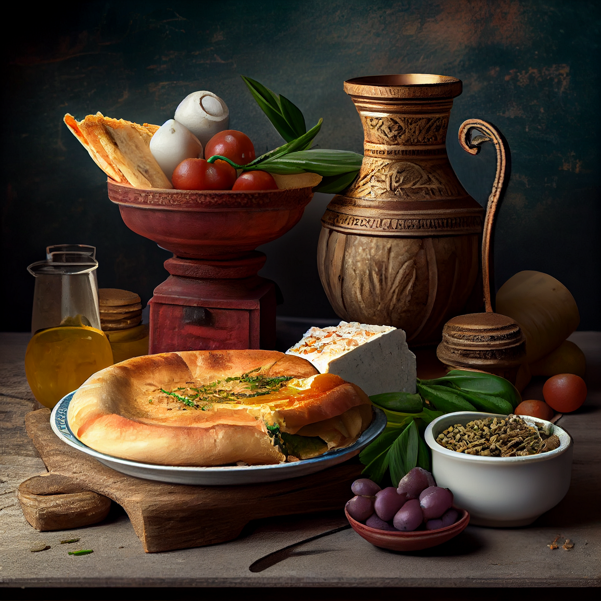

The History of Cuisine
 The Roman Empire had a fully developed imperial cuisine that drew on foods from all over the known world. Scores of Roman food preparations were passed down in the ancient cookbook colloquially known as Apicius, one of the earliest cookbooks in recorded history. The book was named after the famous Roman merchant and epicurer Marcus Gavius Apicius. Although the Romans used fish sauce in almost everything, modern Italian recipes do not call for it. Along with cumin and coriander, the Romans also made great use of the herb lovage. These flavors are uncommon in modern Italian cooking, much like garum. In contrast, Apicius makes only one reference to basil, a common seasoning in modern Italian cooking. Laserpitium was one of the most sought-after Roman seasonings. The Romans devoured the plant until it was extinct.